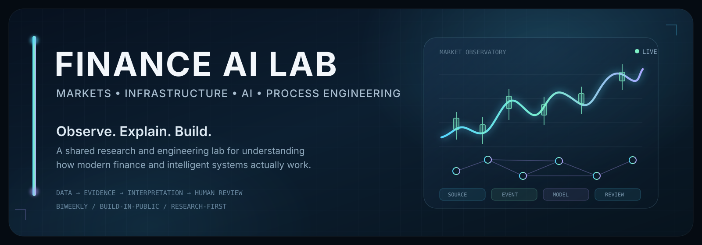

Finance AI Lab is a biweekly collaborative laboratory exploring modern financial infrastructure, market mechanics, cash-flow modeling, and Bring Your Own Key (BYOK) AI engineering.
A quick walkthrough of our core engineering thesis, tools, and Bring Your Own Key (BYOK) workflow.
Data first, math second, narrative last. Observed prices and derived metrics are computed deterministically. LLMs are never systems of record for numbers.
Treats cash flow as a living system (Essentials, Lifestyle, Future). Test income shocks and ask Gemini trade-off questions directly in your browser.
Challenges financial media clickbait. Audits market sessions, enforces 48h freshness filters, and checks if headlines preceded or followed the market move.
Zero shared credit cards or leaked secrets. Grab a free API key in 30 seconds at Google AI Studio and use it in your browser or local .env file.
An interactive, client-side financial wellness engine. Visualizes breathing room, emergency runway, income shocks, and features an in-browser BYOK Gemini explainer.
Deterministic cross-asset market watcher (`SPY`, `QQQ`, `IWM`, `TLT`, `GLD`, `BTC-USD`, `^VIX`). Enforces session-state auditing and timestamp-checked news chronology.
The original automated Windows agent that generated 92 daily reports from April to September 2026. Preserved with complete audit notes and architectural lessons learned.
projects/interesting-projects/ tracking institutional standards, open-source terminals, and local-first tools.